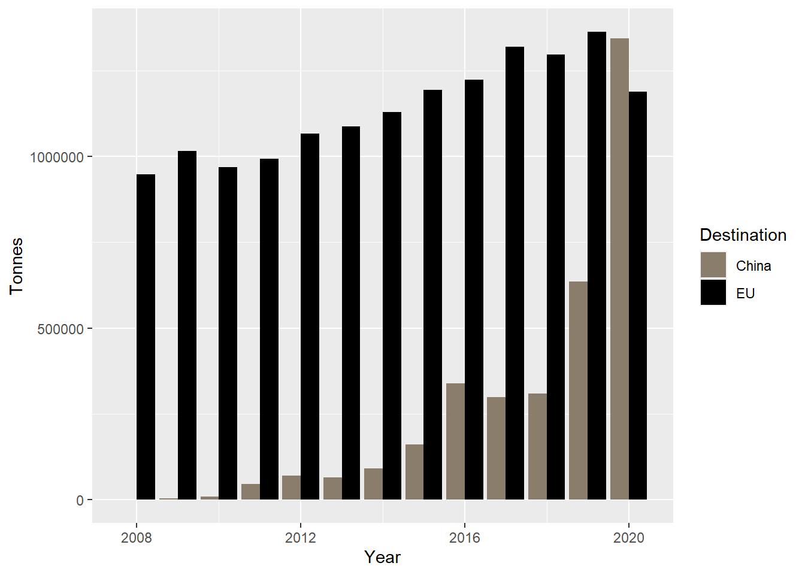

Once again, we start by loading our key libraries
library(readxl)## Warning: package 'readxl' was built under R version 4.0.2library(tidyverse)## Warning: package 'tidyverse' was built under R version 4.0.5## -- Attaching packages --------------------------------------- tidyverse 1.3.1 --## v ggplot2 3.3.5 v purrr 0.3.4
## v tibble 3.1.2 v dplyr 1.0.7
## v tidyr 1.1.3 v stringr 1.4.0
## v readr 2.0.0 v forcats 0.5.1## Warning: package 'ggplot2' was built under R version 4.0.5## Warning: package 'tibble' was built under R version 4.0.5## Warning: package 'tidyr' was built under R version 4.0.5## Warning: package 'readr' was built under R version 4.0.5## Warning: package 'purrr' was built under R version 4.0.2## Warning: package 'dplyr' was built under R version 4.0.5## Warning: package 'stringr' was built under R version 4.0.3## Warning: package 'forcats' was built under R version 4.0.5## -- Conflicts ------------------------------------------ tidyverse_conflicts() --
## x dplyr::filter() masks stats::filter()
## x dplyr::lag() masks stats::lag()library(scales)## Warning: package 'scales' was built under R version 4.0.2##
## Attaching package: 'scales'## The following object is masked from 'package:purrr':
##
## discard## The following object is masked from 'package:readr':
##
## col_factorlibrary(RColorBrewer)Here, we plan to create a bar chart that shows the evolution of pork emat exports from Spain to China and the rest of EU countries. I gathered the data from the Spanish Government and manually created an excel file. Let’s read that excel file ;)
exports<- read_excel("data/pigmeat_exports2.xlsx")Now, we are dealing with large numbers. To turn of R’s scientific notation in our map, we will run the following command stating that are should only use it after a given limit.
options(scipen=2000000000)The only thing left to do it to plot the yearly exports, the next command takes care of it.
ggplot(data = exports, mapping = aes(x=Year, y=Tonnes, fill=Destination)) +
scale_fill_manual(values = c("bisque4", "black"))+
geom_bar(stat="identity", position = "dodge")
And here is our bar chart showing the yearly export of pigmeat from Spain to China and the EU
Lastly, there one data source left to provide here is the trade matrix I used to find out that almost two thirds of the soy imported to Spain comes from Argentina. There is no need to manipulate the dataset, but I feel like it is important to share it here as to add transparency to my project. I obtained the data from FAOSTAT and manually calculated the percentages.
imports<- read_csv("data/Imports_feed_Spain_2019.csv")## Rows: 80 Columns: 16## -- Column specification --------------------------------------------------------
## Delimiter: ","
## chr (8): Domain Code, Domain, Reporter Countries, Partner Countries, Element...
## dbl (7): Reporter Country Code (FAO), Partner Country Code (FAO), Element Co...
## lgl (1): Flag##
## i Use `spec()` to retrieve the full column specification for this data.
## i Specify the column types or set `show_col_types = FALSE` to quiet this message.